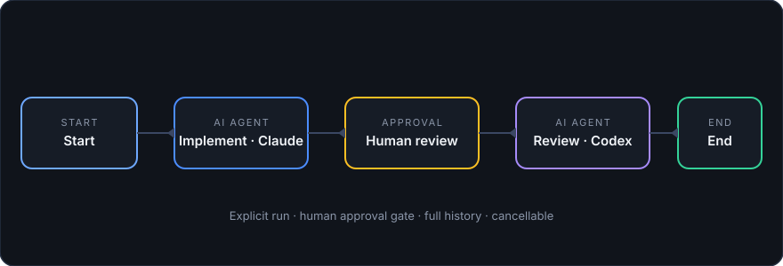

Orchevia
Orchestrate the AI tools you already use. Describe a task once, inspect the plan as a graph, and execute each step through your installed CLIs — Claude Code, Codex, git, gh, tests. Your CLI accounts. Your machine. No telemetry.

Key features
Visual workflow canvas
Start, Command, Approval, AI Agent, Condition, Git, GitHub, Ticket, MCP, and End nodes with edge labels, validation badges, run overlays, and a node inspector.
Real local execution
Executables and arguments are passed separately, with live output in Runs, per-node timeouts, cancellation, and persisted run history.
Agent profiles
Claude/Codex adapters plus any custom CLI, reusable profiles with model
and effort settings, optional CLI skills, {{variable}} prompt
templating, and a plan → approve → implement → review sample.
Branches, retries, loops
Constrained conditions, parallel branches with joins, failure-recovery edges, bounded retries with backoff, and guarded review/fix loops.
Git, GitHub, Jira
Safe git ops (dirty states refused), GitHub via your own
gh (draft PRs, checks, comments), Jira tickets via a local
MCP server that you control.
Automation that stays local
Durable schedules, opt-in tray background mode, GitHub review/feedback watchers with bot-loop guards, and trust-gated write automation.
Generation, templates, memory
Describe a goal to draft a validated preview using Agent, Git, GitHub, Ticket, MCP, and other native nodes. Start from 9 built-in templates or save your own.
Your first workflow in 5 minutes
-
Install and open Orchevia. The first-run wizard detects
git,gh,claude, andcodex, and creates your first agent profiles. - Workflows → Samples… → Plan → Implement → Review → Create. A ready-made graph appears on the canvas.
- Select any node to configure its profile, prompt, or timeout. Canvas badges flag problems before you run.
- Press ▶ Run. Approve the paused gate, inspect per-node output under Runs, cancel anytime. Opening a workflow never runs it.
- Go further: generate flows from a goal with ✦ Generate, save reusable Templates, or schedule nightly runs under Automations.
Local-first, by architecture
Your tools, your auth
Orchevia delegates AI work to CLIs you installed and authenticated. It never asks for model API keys.
Your data stays home
Workflows and runs live in a local SQLite database. Orchevia has no telemetry service; the AI CLIs you choose may contact their providers.
Safe by default
Opening a workflow never executes it. Inspect commands before running; runs are explicit, the active child is stopped on cancel, and authentication stays in your tools. Stored output can contain sensitive data; review it before sharing.
Installation
Orchevia is in beta. Public installers appear here when a GitHub Release with assets is available. Until then, contributors with repository access can build from source. Workflows execute with your user permissions; review generated or imported commands before running.
Checking for public installers…
macOS
Choose the chip in your Mac: Apple Silicon or Intel. Current builds are unsigned.
Linux x86_64
AppImage works on many distributions; Debian/Ubuntu users can use the .deb.
View the latest release and its SHA256 checksums.
Build from source with Node.js 24+, pnpm 10+, Rust stable, and the platform dependencies in the development guide.
git clone https://github.com/iazaran/orchevia.git
cd orchevia
pnpm install
pnpm tauri dev
pnpm dev opens the browser demo with a local mock backend;
pnpm tauri dev runs real workflows in the desktop app. See
the development guide.
Build and contribute
The React editor in src/ talks to a typed backend interface.
pnpm dev uses its mock so contributors can work on the UI without
launching native processes. The Tauri commands in
src-tauri/ delegate execution, validation, scheduling, and SQLite
storage to crates/core/.
Start with
the development guide,
architecture, and
workflow schema. Run pnpm check, cargo test -p orchevia-core,
cargo clippy -p orchevia-core --all-targets -- -D warnings,
cargo fmt --check, and cargo check -p orchevia
before opening a PR. GitHub Actions also builds installers on PRs and
publishes downloads from version tags.
Roadmap
Core workflows, integrations, and local automation are implemented. The current focus is generation quality, run visibility, and preparing the first public release. See the full roadmap in the repository.
Contribute
Apache-2.0 source with a contributor guide and repeatable checks. When the
repository opens publicly, you can clone it, run
pnpm tauri dev, and propose changes.